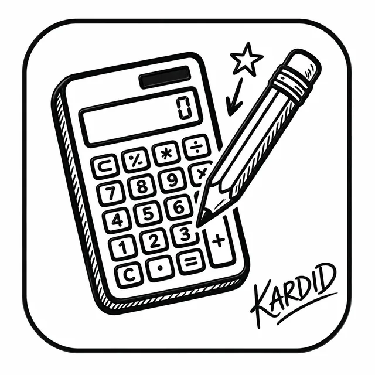

سرعة عالية
ملفات خفيفة وتقنيات ويب أصلية بلا مكتبات ثقيلة.
KARDID Apps علامة تعليمية تطور أدوات سريعة وبسيطة تساعد الأستاذات والأساتذة على الحساب والتنظيم والمتابعة وتبسيط المهام اليومية.

⚡ Fast🔒 Privateتجربة خفيفة وسريعة، تعمل بسلاسة على الهاتف والحاسوب، مع اهتمام واضح بالخصوصية وسهولة الاستخدام.
ملفات خفيفة وتقنيات ويب أصلية بلا مكتبات ثقيلة.
واجهات بسيطة، عصرية، ومناسبة للمستخدم العربي.
جمع أقل قدر ممكن من البيانات مع شفافية كاملة.
أدوات عملية صُممت لتبسيط العمل اليومي، مع تطبيقات جديدة قيد الإعداد.
حساب دقيق وسريع لمجموع نقاط الترقية بالاختيار، مع الحفظ الذكي ومشاركة النتيجة ومحاكاة سيناريوهات الترقية.
أداة ذكية تساعد الأستاذ على إضافة الملاحظات التربوية إلى ملفات مسار بسرعة وتنظيم، مع الحفاظ على الملف الأصلي.
حل احترافي لمعالجة ملفات PDF وExcel محليًا من الهاتف وإنشاء دفعات من الوثائق الشخصية بسرعة وخصوصية.
شاركنا اقتراحك وسنحوّله إلى أداة عملية تخدم الأسرة التعليمية.